Digitalización#
La digitalización es el proceso de convertir los datos geográficos de mapas o imágenes en una forma digital comúnmente representada como datos vectoriales. El dominio de la digitalización es clave para los especialistas en SIG. Les permite convertir la información espacial a un formato digital, lo que facilita una manipulación más eficaz de los datos en comparación con los métodos tradicionales de interpretación de imágenes o mapas en papel.
La digitalización en la labor humanitaria
Si quiere saber cómo el mapeo comunitario y la digitalización pueden ayudar a mejorar la resiliencia de las comunidades y facilitar la labor humanitaria, consulte la publicación de Paul Knight “This is the first time this community is on a map…”, Digital Community Mapping en Nigeria.
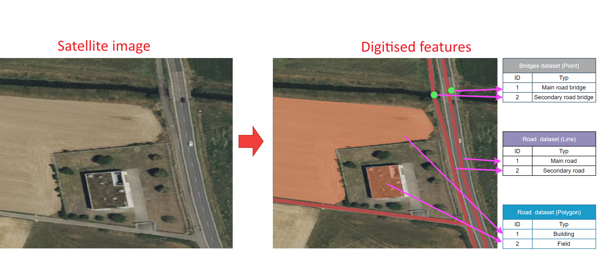
El concepto de digitalización en los SIG (fuente: HeiGIT).#
Digitalización en QGIS#
En QGIS, la digitalización consiste en trazar entidades como puntos, líneas o polígonos directamente sobre el lienzo del mapa para representar elementos geográficos como edificios, carreteras o parcelas. Además, se pueden asignar atributos a cada entidad durante la digitalización, lo que permite su posterior análisis e integración con otros datos geoespaciales. Estos datos digitalizados se convierten en un valioso activo para el análisis espacial y el mapeo.
Escenario real 1/3
Se ha producido una inundación en un pueblo como consecuencia de las fuertes lluvias. Para evaluar las necesidades de las familias y el impacto en la infraestructura, se le pide que haga un mapa general de la región y marque los edificios y carreteras afectados por las inundaciones. Sin embargo, no se dispone de conjuntos de datos con los edificios o las carreteras. Para el mapa, tendrá que crear dos capas nuevas con la red vial y los edificios. Sin embargo, se dispone de imágenes satelitales recientes. Con estas imágenes, puede crear capas vectoriales que representen las infraestructuras esenciales, como edificios y carreteras. Una vez creadas las capas, puede crear un mapa general preliminar del pueblo. Este mapa se entregará a los miembros de la comunidad y a los voluntarios sobre el terreno para mapear la infraestructura dañada. En un siguiente paso, la información recopilada por el equipo sobre el terreno puede utilizarse para enriquecer los datos y crear una evaluación del impacto de la inundación. Para crear el mapa, tendrá que crear capas vectoriales nuevas.
Barras de herramientas de digitalización#
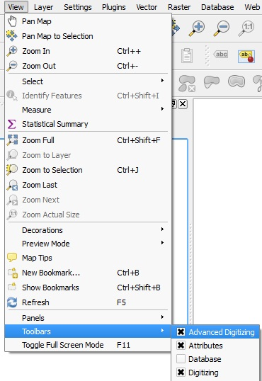
La barra de herramientas de digitalización en QGIS 3.36.#
La digitalización se realiza con la Digitizing Toolbar y en el lienzo del mapa.
En primer lugar, debe comprobar si Digitizing Toolbar está activado. Para ello,
haga clic en la pestaña
Viewde la barra de menús y luego enToolbars. Compruebe si las barras de herramientasDigitizingyAdvanced Digitizingestán activadas.
En primer lugar, debe comprobar si Digitizing Toolbox está activado. Para ello,
Haga clic en la pestaña
Viewde la barra de menús y luego enToolbars. Compruebe si las cajas de herramientasDigitizingyAdvanced Digitizingestán activadas.En la parte superior de la interfaz de QGIS debería aparecer un recuadro de herramientas.
La barra de herramientas de digitalización ofrece las herramientas básicas para crear, guardar y editar entidades. Sin embargo, para todo lo que va más allá de la simple creación de nuevas entidades y la eliminación de entidades, se necesita la barra de herramientas Advanced Digitization (véase digitising_toolbar). Esta última sirve para mover entidades, eliminar partes de entidades y mucho más. Todas las funciones se enumeran en las dos tablas que figuran abajo.

Barra de herramientas de digitalización en QGIS 3.36.#
Barra de herramientas de digitalización
Herramienta |
Finalidad |
Herramienta |
Finalidad |
|---|---|---|---|
|
Permite guardar, retroceder o cancelar cambios simultáneamente en todas las capas o en las capas seleccionadas |
|
Activar o desactivar el modo de edición en las capas seleccionadas. |
|
Guardar cambios |
||
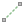 |
Digitalizar usando segmentos rectos |
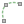 |
Digitalizar usando líneas curvas |
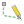 |
Activar digitalización a mano alzada |
Digitalizar polígono de forma regular |
|
|
Añadir nuevo registro |
|
Añadir objeto espacial: Capturar punto |
|
Añadir objeto espacial: Capturar línea |
|
Añadir objeto espacial: Capturar polígono |
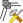 |
Herramienta Vértice (todas las capas) |
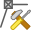 |
Herramienta Vértice (capa actual) |
|
Establecer si el panel del editor de vértices debe abrirse automáticamente |
|
Modificar los atributos de todas las entidades seleccionadas simultáneamente |
|
Borrar objetos seleccionados de la capa activa |
|
Cortar entidades de la capa activa |
|
Copiar las entidades seleccionadas de la capa activa |
|
Pegar las entidades en la capa activa |
Deshacer cambios en la capa activa |
Rehacer cambios en la capa activa |


Para procedimientos de digitalización más complejos, utilizará la barra de herramientas de digitalización avanzada. Sin embargo, en este capítulo, nos centraremos en la barra de herramientas de digitalización normal.
Barra de herramientas de digitalización avanzada
Herramienta |
Propósito |
Herramienta |
Propósito |
|---|---|---|---|
Activar herramientas avanzadas de digitalización |
|||
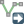  |
Mover entidades |
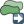 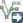  |
Copiar y mover entidades |
Girar entidades |
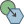 |
Simplificar entidad |
|
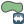 |
Escalar entidad |
||
|
Añadir anillo |
|
Añadir parte |
Rellenar anillo |
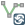 |
Intercambiar dirección |
|
Eliminar anillo |
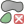 |
Eliminar parte |
|
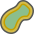 |
Desplazar curva |
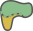 |
Cambiar la forma de entidades |
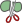 |
Separar partes |
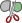 |
Separar entidades |
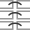 |
Unir atributos de entidades seleccionadas |
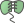 |
Unir entidades seleccionadas |
Rotar símbolos de punto |
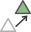 |
Desplazar símbolos de punto |
|
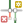 |
Recortar o ampliar entidades |


{kind=link}
{kind=link}
Crear conjuntos de datos nuevos#
Para digitalizar datos nuevos, siempre hay que empezar por crear el conjunto de datos antes de cargarlo con datos digitalizados. Tenga en cuenta que una capa solo puede contener un tipo de geometría: puntos, líneas o polígonos. Cuando cree un conjunto de datos, tendrá que elegir el tipo de geometría. Además, puede añadir más columnas con atributos para añadir más datos a la tabla de datos.
¡Ahora es su turno!
Piense en un conjunto de datos espaciales que podría necesitar en sus operaciones humanitarias. ¿Qué tipo de información adicional es útil? ¿Cómo la recopilaría? Puede tratarse del tipo de carretera, cultivos sembrados, tipo de vegetación o indicadores sociales. Puede debatir en grupos y escribir las respuestas en papel o en la pizarra digital.
Video: Cómo crear un conjunto de datos nuevo
Layer–>Create Layer->New GeoPackage LayeroNew Shapefile LayerHaga clic en
 junto al campo de entrada
junto al campo de entrada file namey vaya a la carpeta en la que desea guardar el conjunto de datos.File encoding: Asegúrese de que está configurado como UTF-8.Geometry type: Seleccione el tipo de entidad que desea digitalizar, p. ej., puntos o líneas.En
Additional dimensiondebe asegurarse siempre de queNoneestá marcada. Excepto si existe la posibilidad de recoger también los valores Z (elevación). Pero en la mayoría de los casos no es así.Lista desplegable del SRC: Seleccione el EPSG/SRC que desea establecer para la nueva capa. Por defecto, QGIS selecciona el SRC del proyecto. Si desea cambiarlo, haga clic en
 .
.En
New Fieldpuede añadir columnas a la nueva capa. Aquí puede configurar qué otro tipo de datos desea recopilar en este conjunto de datos.Type: Seleccione el tipo de datos que tendrá la columna, p. ej.Text,Whole number,Decimal Number,Date.Haga clic en
 para añadir la nueva columna a
para añadir la nueva columna a Fields List.
Haga clic en
OKpara crear los nuevos datos.
{kind=link}
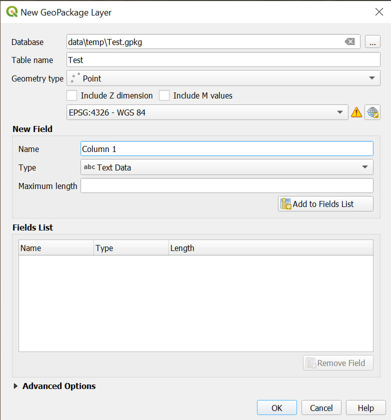
La ventana de creación de capas en QGIS 3.36.#
Attention
Un concepto importante que hay que entender antes de empezar a añadir datos a los conjuntos de datos es que, siempre que se realicen cambios en un conjunto de datos que no sean de estilo, hay que activar el modo de edición. Para ello, seleccione la capa y haga clic en 
Toggle Editing. Ahora es posible hacer clic en los botones de muchas funciones de la barra de herramientas de digitalización. Cuando haya terminado de manipular la capa, haga clic en 
Save Layer Edits para guardar los cambios.
Una vez configurada la nueva capa, puede empezar a añadir entidades geométricas. El proceso para los tres tipos geométricos es básicamente el mismo:
Crear nuevas entradas de datos.#
Seleccione la capa a la que se desea añadir datos en el panel Layer.
Vaya a la barra de herramientas de digitalización y haga clic en
Toggle Editing. Asegúrese de que la capa está en modo de edición. Si no es así, haga clic en el icono de la
barra de herramientas de digitalización.
Crear datos de punto#
Seleccione la capa de puntos a la que desea añadir datos en el panel Layer.
Vaya a la barra de herramientas de digitalización y haga clic en
Toggle Editing. Asegúrese de que la capa está en modo de edición. Si no es así, haga clic en el icono de la barra de herramientas de digitalización.Haga clic en
 .
.Haga clic izquierdo en la entidad que desea digitalizar.
Al hacer clic, aparecerá una ventana
[Your Layer Name]- Feature Attribute. Aquí puede añadir la información sobre esta entidad a las diferentes columnas, sobre la base de la tabla de atributos de la capa.Una vez que haya terminado la digitalización,
para guardar los cambios.Haga clic de nuevo en
para cerrar el modo de edición.
Video: Cómo crear datos de punto

Creación de puntos.#
Obtener coordenadas de Google Maps
A veces la forma más fácil de obtener las coordenadas de un lugar, como la oficina de una sociedad nacional de la Cruz Roja o de la Media Luna Roja o simplemente de una casa, es utilizar Google Maps. En Google Maps, puede hacer clic derecho en cualquier lugar para obtener las coordenadas (en grados).
{kind=link}
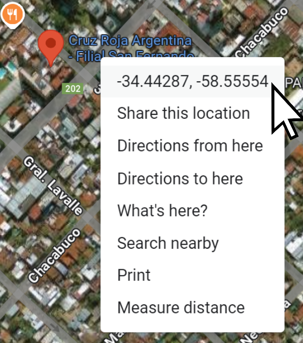
En Google Maps, localice el punto que desea añadir a su proyecto de QGIS.
Haga clic derecho en el punto y seleccione las coordenadas. Se copiarán automáticamente en el portapapeles.
Vaya a su proyecto de QGIS y pegue las coordenadas en la barra de búsqueda de la esquina inferior izquierda de la ventana de QGIS.
Seleccione
Go to [Your coordinates] (EPSG 4326: WGS 84).El punto de coordenadas parpadeará en rojo en el lienzo del mapa.
¡Ahora es su turno!
Intente digitalizar las oficinas de la Cruz Roja y la Media Luna Roja de su país siguiendo los pasos que se indican a continuación.
Cree un nuevo conjunto de datos de puntos.
Añada un mapa base (OSM o Bing Aerial, por ejemplo).
Busque las oficinas de la Cruz Roja y la Media Luna Roja de su país en Google Maps.
Una vez localizadas, haga clic derecho en una de ellas en Google Maps y haga clic en las coordenadas. Las coordenadas se copiarán en el portapapeles
Pegue las coordenadas en la barra de búsqueda ubicada en la parte inferior izquierda de la ventana de QGIS. Seleccione ir a las coordenadas. La ubicación se marcará con un punto rojo.
Active el modo de edición
en su nueva capa.Haga clic en
.Añada la entidad de punto en la ubicación indicada.
Añada el nombre de la oficina.
Haga clic en
Ok.Haga clic en
para guardar los cambios.Haga clic en
para salir del modo de edición.
Crear capas de líneas y polígonos#
El proceso de creación de capas de líneas o polígonos es esencialmente el mismo que el de datos de puntos. La diferencia principal es que, en lugar de añadir solo un punto, las geometrías de líneas y polígonos requieren varios puntos (vértices). Cada punto que añade es un vértice entre dos líneas. En QGIS las líneas y los polígonos se crean estableciendo un punto y, a continuación, otro punto conectado al punto añadido anteriormente. Para terminar de añadir la entidad haga clic derecho.
Attention
Recuerde cambiar el tipo de geometría a líneas si desea crear una nueva capa de línea.
La creación de datos de líneas funciona de la misma manera que la creación de datos de puntos (véase más arriba). En primer lugar, debe crear una nueva capa de líneas o utilizar una ya existente.
Seleccione la capa de línea a la que desea añadir datos en el panel Layer.
Vaya a la barra de herramientas de digitalización y haga clic en
. Ahora, la capa está en modo de edición.Haga clic en
 .
.Para digitalizar entidades de línea, haga clic a lo largo de la línea. Cuando haya terminado, haga clic derecho en el último punto de la línea para finalizar la entidad.
Aparecerá una ventana
[Your Layer Name]- Feature Attribute. Aquí puede añadir la información sobre esta entidad a las diferentes columnas, sobre la base de la tabla de atributos de la capa.Una vez que haya terminado la digitalización, haga clic en
Save Layer Editspara guardar los cambios.Vuelva a hacer clic en
Toggle Editingpara salir del modo de edición.
La creación de capas de polígonos funciona del mismo modo que para los datos de puntos y líneas.
Seleccione la capa de polígonos a la que desea añadir datos en el panel Layer.
Vaya a la barra de herramientas de digitalización y haga clic en
. Ahora, la capa está en modo de edición.Haga clic en
 .
.Para digitalizar entidades poligonales, haga clic izquierdo alrededor del área que desea digitalizar. Cuando haya terminado, haga clic derecho en el último punto del área para finalizar la entidad.
Aparecerá una ventana
[Your Layer Name]- Feature Attribute. Aquí puede añadir la información sobre esta entidad a las diferentes columnas, sobre la base de la tabla de atributos de la capa.Una vez que haya terminado la digitalización,
para guardar los cambios.Vuelva a hacer clic en
Toggle Editingpara salir del modo de edición.
Escenario real 2/3
Lo primero que hay que hacer es localizar el pueblo utilizando las coordenadas GPS que se introducen en la esquina inferior derecha de la ventana de QGIS. Por suerte, el proceso de digitalización es relativamente fácil, ya que se dispone de una imagen por satélite reciente proporcionada por Microsoft Bing. Puede cargar la imagen satelital utilizando el QuickMapServices y buscando y añadiendo el mapa base Bing Aerial. Puede ver los edificios y las carreteras en la imagen de satélite. El siguiente paso será crear capas nuevas: una para las carreteras y otra para los edificios.
Editar los datos#
En algunos casos, es posible que desee modificar o corregir datos vectoriales debido a imprecisiones o cambios. La edición de estos datos se realiza con la barra de herramientas de digitalización. En QGIS puede editar tanto las geometrías como los valores de la tabla de atributos.
Editar geometrías#
Para todos los casos:
Seleccione la capa que desea editar.
Haga clic en
para activar el modo de edición.Haga los cambios.
Guarde los cambios haciendo clic en
.Haga clic de nuevo en
para cerrar el modo de edición.
Tip
Puede utilizar los botones y para deshacer los cambios fácilmente.
Tenga en cuenta que esto solo es posible antes de guardar los cambios.
Seleccione la capa que desea modificar.
Vaya a la barra de herramientas de digitalización y haga clic en
Toggle Editing.Haga clic en
 y seleccione la entidad que desea eliminar (consulte la wiki).
y seleccione la entidad que desea eliminar (consulte la wiki).Una vez seleccionadas las entidades, haga clic en
 para eliminarlas.
para eliminarlas.Una vez que haya terminado de editar, haga clic en
para guardar los cambios.Haga clic de nuevo en
para cerrar el modo de edición.
Note
Tenga en cuenta que una vez que guarde los cambios , ya no podrá deshacer o recuperar las entidades eliminadas. Los cambios modifican permanentemente el archivo de datos de su carpeta.
Existen múltiples métodos para mover entidades. Aquí mostraremos el método que funciona de la misma manera para entidades de punto, línea y polígono. Para esto se necesita la caja de herramientas de digitalización avanzada.
Seleccione la capa de línea a la que desea añadir datos en el panel Layer.
Vaya a la barra de herramientas de digitalización y haga clic en
.Haga clic en
y en la entidad que desea mover. A continuación, haga clic en la ubicación a la que desea desplazar la entidad.Una vez que haya terminado de editar, haga clic en
para guardar los cambios.Vuelva a hacer clic en
para cerrar el modo de edición.
Seleccione la capa de línea a la que desea añadir datos en el panel Layer.
Vaya a la barra de herramientas de digitalización y haga clic en
.Haga clic en .
Ahora puede mover cada vértice (esquina) de una entidad. Haga clic en el vértice/esquina que desea mover y, a continuación, haga clic en la ubicación a la que desea mover el vértice.
Una vez que haya terminado de editar, haga clic en
para guardar los cambios.Vuelva a hacer clic en
para cerrar el modo de edición.
Un anillo en QGIS es una parte dentro de un polígono que no forma parte del polígono. Imagine un polígono que representa un lago. El anillo es una isla en el lago. Para comprenderlo mejor, vea el video más abajo.
Seleccione la capa de línea a la que desea añadir datos en el panel Layer.
Vaya a la barra de herramientas de digitalización y haga clic en
.Haga clic en
 .
.Cree un anillo haciendo clic en el área que desea excluir. Haga clic derecho para cerrar el anillo.
Una vez que haya terminado de editar, haga clic en
para guardar los cambios.Vuelva a hacer clic en
para cerrar el modo de edición.
Editar los valores de los atributos#
A veces tendrá que editar los valores de las columnas de la tabla de atributos. Por ejemplo, el nombre de un distrito administrativo que esté escrito de forma incorrecta o diferente o si un valor no se ha introducido correctamente. Para ello, tendrá que:
Abra la tabla de atributos
Haga clic en
para activar el modo de edición.Seleccione el campo que desea editar.
Introduzca el valor corregido.
Haga clic en
para guardar los cambios.Vuelva a hacer clic en
para salir del modo de edición.
Este proceso se denomina “Limpieza de datos” y es importante cuando se realizan análisis de datos o se manipulan datos de cualquier forma. Al recopilar o digitalizar datos, es fácil cometer pequeños errores, como un valor erróneo, un tipo de valor equivocado o una falta de ortografía. Por lo tanto, al realizar los análisis, es importante revisar la tabla de atributos en busca de incoherencias o errores. Si estos errores no se limpian, los resultados serán incorrectos y se podrían sacar conclusiones erróneas.
Escenario real 3/3
Con las nuevas capas, ya tiene todo listo para trazar los edificios y las carreteras en las nuevas capas. Ya tiene algunos conocimientos sobre el estado de las carreteras (p. ej., la superficie de la carretera, la calidad y si está inundada) y el estado de las casas (p. ej., si fueron afectadas por la inundación, si tienen varios pisos, etc.). Se trata de información útil que puede almacenarse en los atributos adicionales de la tabla de datos.

Evaluación de daños en edificios de Paikgachha Upazila, distrito de Khulna, división de Khulna, Bangladesh, al 4 de junio de 2024 (fuente: Int’l Charter, UNOSAT)#
Errores de digitalización espacial en QGIS#
La precisión de los datos geoespaciales es crucial para el análisis espacial. Los errores de posición son inevitables cuando los datos se digitalizan manualmente. Los ejemplos más comunes son el subajuste y el sobreajuste. Cuando las coordenadas no se conectan como deberían, y sobreajuste, cuando las líneas se pasan de donde deberían. A menudo, estos errores no son visibles a menos que se acerque el zoom sobre esas coordenadas. Establecer una tolerancia difusa (tolerancia de ajuste) sirve para reducir los subajustes y los sobreajustes. La tolerancia de ajuste es la distancia mínima tolerada entre nodos, líneas y vértices.
{kind=link}
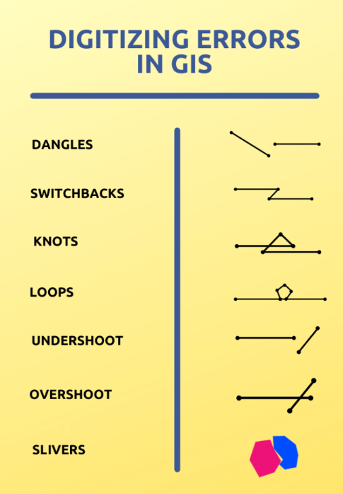
Errores de digitalización (fuente: SpatialPost).#
Preguntas de autoevaluación#
Recapitule sus conocimientos
¿Qué es la digitalización en los SIG? ¿Por qué es útil convertir entidades de mapas o imágenes en forma vectorial?
Respuesta
La digitalización en SIG es el proceso de trazar o capturar entidades geográficas (puntos, líneas y polígonos) de mapas, imágenes (como imágenes satelitales, aéreas o de mapas escaneados) o informes y convertirlos en datos vectoriales. Es útil porque nos permite realizar análisis espaciales y obtener información sobre el fenómeno captado en el espacio. Además, podemos combinarlos con otros datos espaciales y mostrarlos en mapas informativos.
¿Cómo se crea un nuevo conjunto de datos vectoriales?
Respuesta
En la barra superior, vaya al menú
Layer→Create Layer→New GeoPackage LayeroNew Shapefile Layer.Especifique las propiedades de la capa.
Especifique la ruta y el nombre del archivo.
Codificación: UTF-8 (permite caracteres especiales).
Tipo de geometría: punto, línea o polígono (una capa solo admite un tipo de geometría).
Sistema de referencia de coordenadas (SRC)
Defina los campos de atributo (columnas) que desea en la tabla de atributos de la capa.
Haga clic en
Okpara crear la capa.
Imagine que está digitalizando edificios afectados por una inundación a partir de una imagen aérea. ¿Qué campos de atributos podría incluir y qué nivel de detalle o precisión intentaría mantener?
Respuesta
Los atributos que desee digitalizar dependerán siempre del objetivo de su labor de mapeo (p. ej., respuesta a emergencias, evaluación de daños o planificación) y de si trabaja sobre el terreno o se basa en imágenes satelitales.
Posibles campos de atributo
Tipo de edificio/uso: p. ej., residencial, comercial, industrial, público
Número de pisos
Material del techo
Material de las paredes
Condición del edificio: p. ej., “sin daños”, “daños menores”, “daños graves”, “colapsado”
Profundidad de la inundación o exposición al agua
Fecha de la evaluación
Confianza/calidad
Dirección
…